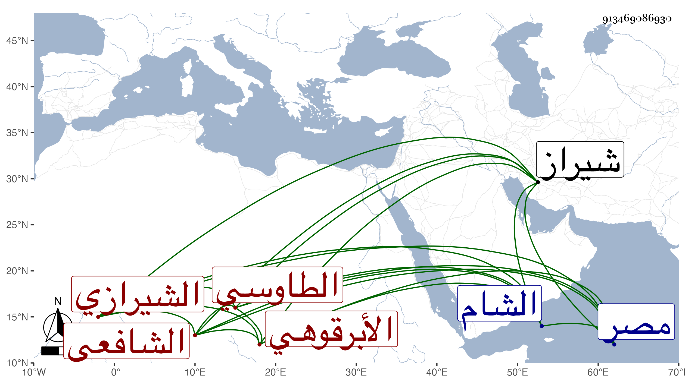

0902Sakhawi.DawLamic.ITO20230111-ara1.EIS1600.913469086930
Biography ID: 913469086930
أحمد بن عبد الله بن عبد القادر بن عبد الحق بن عبد القادر الحكيم بن محمد ابن عبد السلام نور الدين أبو الفتوح بن الجلال أبي الكرم بن أبي الفتوح بن أبي الخير الطاوسي نسبة لطاوس الحرمين الأبرقوهي الأصل الشيرازي الشافعي والد القطب محمد وابن أخي الظهير عبد الرحمن الآتي هو وأبوه من بيت كبير لهم شهرة وجلالة بشيراز ذكرت في تاريخي الكبير منهم جملة . ولد تقريبا من سنة تسعين وسبعمائة وتلا القرآن بعدما تعلمه من أدباء مجودين لعاصم على أبيه وسمع الكثير منه بالعشر على ابن الجزري وكذا قرأ القرآن ومقدمات العلوم على الظهير عبد اللطيف البكري وأخذ في مبادئ العلوم أيضا عن التاج محمود الفاروثي والشهاب داود اللاري والفخر أحمد الشيفكي والكمال محمود الخوارزمي ولازم الثاني كثيرا في الكافيتين وشروحهما وشرح الشمسية في المنطق بل وبعض الكشاف والثالث في كافية النحو والريحانية في الصرف وشرحهما لكل من السد ركن الدين والتفتازاني والرابع شرح الشمسية للقطب وأخذ الحاوي وشرحه للقونوي والمنهاج الأصلي وشرحه للأسنوي عن الجمال محمود بن أبي الفتح السرسنائي والكثير من شرح المواقف عن مؤلفه الصدر الأصبهاني وجملة من المطول والمختصر وغيرهما عن السيد الجرجاني مع حاشية على أولهما وشرحه لمفتاح السكاكي وعن الركن الخوافي شرحه للمختصر الأصلي والمواقف للأيجي وعن الشمس التستري المطول في آخرين في هذه العلوم وغيرها ، وتفنن وبرع وأذن له من ذكر وغيرهم كالجمال محمد بن محمد الكازرونى في الافتاء ولبس الخرقة من غير واحد من الأكابر كالركن الخوافي ، واعتنى بالرواية وارتحل بسببها ولكن ما أظنه دخل مصر والشام وحصل منها جانبا بحيث زاحمت شيوخه سماعا وإجازة المائتين ولم يتوقف في الأخذ عن أقرانه بل ومن دونهم وأفرد له مشيخة طالعتها وفيها الكثير مما ينتقد وفيهم عمه محمد بن عبد القادر الآتي وفيها أن من تصانيفه خزانة اللآلي في الأحاديث العوالي ونشر الفضائل في ترجمة رجال الشمائل وتنقيح الحاوي في الفقه وتحقيق التنقيح ورسائل وغيرها كالذي كتبه على الكافية وهو بالفارسية جمع فيه أكثر ما في شروحهما حتى شرح النجم الرضي ، وبالجملة فهو من نوادر تلك النواحي وقد لقيه صاحبنا السيد العلائ الأيجي فلبس منه الخرقة وسمع منه بعض الأحاديث وقال لي أنه كان عالما صنف في الفقه وغيره وأخذ عنه الأجلاء . ومات وقد عمر قريبا من سنة إحدى وسبعين ومن شيوخه بالسماع عماه عبد الرحمن ومحمد والجنيد البلياني وابن الجزري والمجد الفيروزابادي والسيد نور الدين الأيجي والشرف الجرهي وسعد الدين المصري ، وأما بالإجازة فكثير كالجمال أبي الفضل محمد بن علي النويري وممن قبلهم كان ابن صديق أجاز له في سنة ست وثمانمائة .
